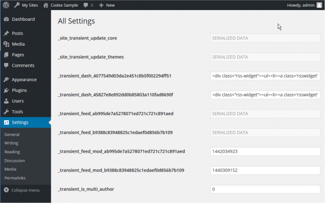

Languages:
English •
Español •
日本語
Türkçe •
(Add your language)
Options are pieces of data that WordPress uses to store various preferences and configuration settings. Listed below are the options, along with some of the default values from the current WordPress install. By using the appropriate function, options can be added, changed, removed, and retrieved, from the wp_options table. Or, you may use All Settings Screen to view and change options. This list reflects the WordPress 2.9 release, and does not include options that were deprecated by that version.
Definitions are normally typed, possible option-values are bolded, and option-value definitions are italicized. Data types are given after the possible values (if those are given) like this:
Data type: Integer
You can help make this page more complete!
Here are some things you can do to help:
- Add documentation to un-documented options, by adding a description, possible values, and the option's data type.
- List more options here, following the category structure (if they are not already listed).
- Correct errors by moving functions to better categories where appropriate, and of course fixing typos.
Read Contributing to WordPress to find out more about how you can contribute to the effort!
View By Category
Discussion
- blacklist_keys
- When a comment contains any of these words in its content, name, URL, e-mail, or IP, it will be marked as spam. One word or IP per line. It will match inside words, so "press" will match "WordPress."
- Default: NULL
- Data type: String (possibly multi-line)
- comment_max_links
- Hold a comment in the queue if it contains the value of this option or more.
- Default: 2
- Data type: Integer
- comment_moderation
- Before a comment appears, an administrator must always approve the comment.
- 1 : Yes
- 0 : False (default)
- Data type: Integer
- comments_notify
- E-mail me when anyone posts a comment.
- 1 : Yes (default)
- 0 : No
- Data type: Integer
- default_comment_status
- Allow comments (can be overridden with individual posts)
- open : Allow comments (default)
- closed : Disallow comments
- Data type: String
- default_ping_status
- Allow link notifications from other blogs (pingbacks and trackbacks).
- open : Allow pingbacks and trackbacks from other blogs (default)
- closed : Disallow pingbacks and trackbacks from other blogs
- Data type: String
- default_pingback_flag
- Attempt to notify any blogs linked to from the article (slows down posting).
- 1 : Yes (default)
- 0 : No
- Data type: Integer
- moderation_keys
- When a comment contains any of these words in its content, name, URL, e-mail, or IP, it will be held in the moderation queue. One word or IP per line. It will match inside words, so "press" will match "WordPress."
- Default: NULL
- Data type: String (possibly multi-line)
- moderation_notify
- E-mail me when a comment is held for moderation.
- 1 : Yes (default)
- 0 : No
- Data type: Integer
- require_name_email
- Before a comment appears, the comment author must fill out his/her name and email.
- 1 : Yes (default)
- 0 : No
- Data type: Integer
- thread_comments
- Enable WP-native threaded (nested) comments.
- 1 : Yes
- 0 : No (default)
- Data type: Integer
- thread_comments_depth
- Set the number of threading levels for comments.
- 1 thru 10 : levels
- Default: 5
- Data type: Integer
- show_avatars
- Avatar Display
- 1 : (default) Show Avatars
- 0 : Do not show Avatars
- Data type: Integer
- avatar_rating
- Maximum Rating
- G : (default) Suitable for all audiences
- PG : Possibly offensive, usually for audiences 13 and above
- R : Intended for adult audiences above 17
- X : Even more mature than above
- Data type: String
- avatar_default
- Default Avatar
- mystery : (default) Mystery Man
- blank : Blank
- gravatar_default : Gravatar Logo
- identicon : Identicon (Generated)
- wavatar : Wavatar (Generated)
- monsterid : MonsterID (Generated)
- retro : Retro (Generated)
- Data type: String
- close_comments_for_old_posts
- Automatically close comments on old articles
- 1 : Yes
- 0 : No (default)
- Data type: Integer
- close_comments_days_old
- Automatically close comments on articles older than x days
- Default: 14
- Data type: Integer
- show_comments_cookies_opt_in
- Show the cookies opt-in checkbox on the comment form and enable comment cookies
- 1 : Yes (default as of 4.9.8)
- 0 : No
- Data type: Integer
- page_comments
- Break comments into pages
- 1 : Yes (default)
- 0 : No
- Data type: Integer
- comments_per_page
- Default: 50
- Data type: Integer
- default_comments_page
- Default: 'newest'
- Data type: String
- comment_order
- asc : (default)
- desc :
- Data type: String
- comment_whitelist
- Comment author must have a previously approved comment
- 1 : Yes (default)
- 0 : No
- Data type:
General
- admin_email
- Administrator email
- Default: 'you@example.com'
- Data type: String
- blogdescription
- Blog tagline
- Default: '__('Just another WordPress weblog')'
- Data type: String
- blogname
- Blog title
- Default: '__('My Blog')'
- Data type: String
- comment_registration
- Users must be registered and logged in to comment
- 1 : Yes
- 0 : No (default)
- Data type: Integer
- date_format
- Default date format (see Formatting Date and Time)
- Default: '__('F j, Y')'
- Data type: String
- default_role
- The default role of users who register at the blog.
- subscriber : (default)
- administrator :
- editor :
- author :
- contributor :
- Data type: String
- gmt_offset
- Times in the blog should differ by this value.
- -6 : GMT -6 (aka Central Time, USA)
- 0 : GMT (aka Greenwich Mean Time)
- Default: date('Z') / 3600
- Data type: Integer
- home
- Blog address (URL)
- Default: wp_guess_url()
- Data type: String (URI)
- siteurl
- WordPress address (URL)
- Default: wp_guess_url()
- Data type: String (URI)
- start_of_week
- The starting day of the week.
- 0 : Sunday
- 1 : Monday (default)
- 2 : Tuesday
- 3 : Wednesday
- 4 : Thursday
- 5 : Friday
- 6 : Saturday
- Data type: Integer
- time_format
- Default time format (see Formatting Date and Time)
- Default: '__('g:i a')'
- Data type: String
- timezone_string
- Timezone
- Default: NULL
- Data type: String
- users_can_register
- Anyone can register
- 1 : Yes
- 0 : No (default)
- Data type: Integer
Links
- links_updated_date_format
- Default: '__('F j, Y g:i a')'
- Data type: String
- links_recently_updated_prepend
- Default: ''
- Data type: String
- links_recently_updated_append
- Default: ''
- Data type: String
- links_recently_updated_time
- Default: 120
- Data type: Integer
Media
- thumbnail_size_w
- Default: 150
- Data type: Integer
- thumbnail_size_h
- Default: 150
- Data type: Integer
- thumbnail_crop
- Crop thumbnail to exact dimensions (normally thumbnails are proportional)
- 1 : Yes (default)
- 0 : No
- Data type: Integer
- medium_size_w
- Default: 300
- Data type: Integer
- medium_size_h
- Default: 300
- Data type: Integer
- large_size_w
- Default: 1024
- Data type: Integer
- large_size_h
- Default: 1024
- Data type: Integer
- embed_autourls
- Attempt to automatically embed all plain text URLs
- Default: 1
- Data type: Integer
- embed_size_w
- Default: NULL
- Data type: Integer
- embed_size_h
- Default: 600
- Data type: Integer
Miscellaneous
- hack_file
- Use legacy my-hacks.php file support
- 1 : Yes
- 0 : No (default)
- Data type: Integer
- html_type
- Default MIME type for blog pages (text/html, text/xml+html, etc.)
- Default: 'text/html'
- Data type: String (MIME type)
- secret
- Secret value created during installation used with salting, etc.
- Default: wp_generate_password(64)
- Data type: String (MD5)
- upload_path
- Store uploads in this folder (relative to the WordPress root)
- Default: NULL
- Data type: String (relative path)
- upload_url_path
- URL path to upload folder (will be blank by default - Editable in All Settings Screen.
- Data type: String (URL path)
- uploads_use_yearmonth_folders
- Organize my uploads into month- and year-based folders
- 1 : Yes (default)
- 0 : No (default for safe mode)
- Data type: Integer
- use_linksupdate
- Track links' update times
- 1 : Yes
- 0 : No (default)
- Data type: Integer
Permalinks
- permalink_structure
- The desired structure of your blog's permalinks. Some examples:
- /%year%/%monthnum%/%day%/%postname%/ : Date and name based
- /archives/%post_id%/ : Numeric
- /%postname%/ : Post name-based
- You can see more examples by viewing Using Permalinks.
- Default: NULL
- Data type: String
- category_base
- The default category base of your blog categories permalink.
- Default: NULL
- Data type: String
- tag_base
- The default tag base for your blog tags permalink.
- Default: NULL
- Data type: String
Privacy
- blog_public
- 1 : I would like my blog to be visible to everyone, including search engines (like Google, Sphere, Technorati) and archivers. (default)
- 0 : I would like to block search engines, but allow normal visitors.
- Data type: Integer
Reading
- blog_charset
- Encoding for pages and feeds. The character encoding you write your blog in (UTF-8 is recommended).
- Default: 'UTF-8'
- Data type: String
- gzipcompression
- WordPress should compress articles (with gzip) if browsers ask for them.
- 1 : Yes
- 0 : No (default)
- Data type: Integer
- page_on_front
- The ID of the page that should be displayed on the front page. Requires show_on_front's value to be page.
- Data type: Integer
- page_for_posts
- The ID of the page that displays posts. Useful when show_on_front's value is page.
- Data type: Integer
- posts_per_page
- Show at most x many posts on blog pages.
- Default: 10
- Data type: Integer
- posts_per_rss
- Show at most x many posts in RSS feeds.
- Default: 10
- Data type: Integer
- rss_language
- Language for RSS feeds (metadata purposes only)
- Default: 'en'
- Data type: String (ISO two-letter language code)
- rss_use_excerpt
- Show an excerpt instead of the full text of a post in RSS feeds
- 1 : Yes
- 0 : No (default)
- Data type: Integer
- show_on_front
- What to show on the front page
- posts : Your latest posts (default)
- page : A static page (see page_on_front)
- Data type: String
Themes
- template
- The slug of the currently activated theme (how it is accessed by path, ex. /wp-content/themes/some-theme: some-theme would be the value)
- Default: 'default'
- Data type: String
- stylesheet
- The slug of the currently activated stylesheet (style.css) (how it is accessed by path, ex. /wp-content/themes/some-style: some-style would be the value)
- Default: 'default'
- Data type: String
Writing
- default_category
- ID of the category that posts will be put in by default
- Default: 1
- Data type: Integer
- default_email_category
- ID of the category that posts will be put in by default when written via e-mail
- Default: 1
- Data type: Integer
- default_link_category
- ID of the category that links will be put in by default
- Default: 2
- Data type: Integer
- default_post_edit_rows
- Size of the post box (in lines)
- Default: 10
- Data type: Integer
- mailserver_login
- Mail server username for posting to WordPress by e-mail
- Default: 'login@example.com'
- Data type: String
- mailserver_pass
- Mail server password for posting to WordPress by e-mail
- Default: 'password'
- Data type: String
- mailserver_port
- Mail server port for posting to WordPress by e-mail
- Default: 110
- Data type: Integer
- mailserver_url
- Mail server for posting to WordPress by e-mail
- Default: 'mail.example.com'
- Data type: String
- ping_sites
- When you publish a new post, WordPress automatically notifies the following site update services. For more about this, see Update Services. Separate multiple service URLs with line breaks. Requires blog_public to have a value of 1.
- Default: 'http://rpc.pingomatic.com/'
- Data type: String (possibly multi-line)
- use_balanceTags
- Correct invalidly-nested XHTML automatically
- 1 : Yes
- 0 : No (default)
- Data type: Integer
- use_smilies
- Convert emoticons like :-) and :P to graphics when displayed
- 1 : Yes (default)
- 0 : No
- Data type: Integer
- use_trackback
- Enable sending and receiving of trackbacks
- 1 : Yes
- 0 : No (default)
- enable_app
- Enable the Atom Publishing Protocol
- 1 : Yes
- 0 : No (default)
- Data type: Integer
- enable_xmlrpc
- Enable the WordPress, Movable Type, MetaWeblog and Blogger XML-RPC publishing protocols
- 1 : Yes
- 0 : No (default)
- Data type: Integer
Uncategorized
- active_plugins
- Returns an array of strings containing the path of the main php file of the plugin. The path is relative to the plugins folder. An example of path in the array : 'myplugin/mainpage.php'.
- Default: array()
- Data type: Array
- advanced_edit
- Default: 0
- Data type: Integer
- recently_edited
- Default: NULL
- Data type:
- image_default_link_type
- Default: 'file'
- Data type: 'file', 'none'
- image_default_size
- Default: NULL
- Data type: 'thumbnail', 'medium', 'large' or Custom size: https://codex.wordpress.org/Function_Reference/add_image_size
- image_default_align
- Default: NULL
- Data type: 'left', 'right', 'center', 'none'
- sidebars_widgets
- Returns array of sidebar states (list of active and inactive widgets).
- Default:
- Data type: Array
- sticky_posts
- Default: array()
- Data type:
- widget_categories
- Default: array()
- Data type:
- widget_text
- Default: array()
- Data type:
- widget_rss
- Default: array()
- Data type:
All Settings Screen
WordPress Version 3.0 removed Settings -> Miscellaneous screen and some of options cannot be reached (ex. upload_url_path). You may use All Settings Screen to view and change almost all options listed in above.

You cannot reach this page from Dashboard menu but direct access to the page.
- Go to (your site)/wp-admin/options.php.
- Options are sorted by alphabetical order. Find out the options you want to change, edit it and click Save Changes button at the bottom of the page.
- Or click any menu in the Dashboard to exit.
Source Code
Changelog
- 2.9 : Deleted rss_excerpt_length.
{kind=link}